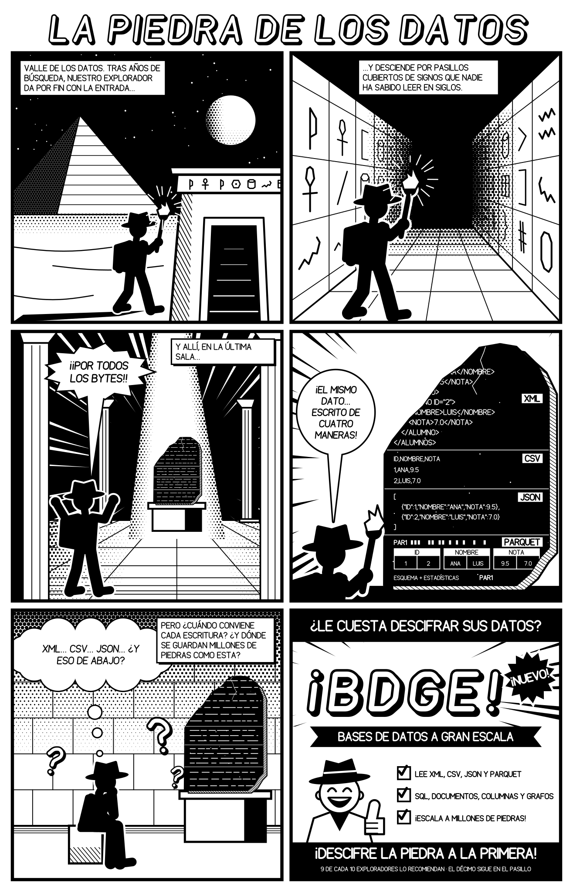

Sesión 0 · Introducción
Introducción a la asignatura BDGE para el curso 2026/2027

Transparencias y boletines · Curso 2026/2027
Introducción a la asignatura BDGE para el curso 2026/2027
Modelado de datos, modelo relacional y consultas SQL
SQL (ii) — DDL, modificación de datos, JSON en SQL y modelado orientado a la eficiencia
NoSQL frente a SQL — historia, gran array distribuido, agregados, esquema flexible y familias de modelos
MongoDB frente a SQL — lenguaje, agregación, índices, consistencia, transacciones, fragmentación y replicación
Bases de datos columnares y Apache Cassandra — modelo de datos, distribución, arquitectura y acceso desde Python
Bases de datos de grafos, Neo4j y el lenguaje Cypher — modelado, algoritmos y rendimiento
Introducción
En esta hoja introduciremos la forma de trabajar con Jupyter Notebook/Google Colab.
SQL
Esta hoja muestra cómo acceder a bases de datos SQL y también a conectar la salida con Jupyter.
SQL
Boletín evaluable de SQL (MySQL 8): particionado, índices Full-Text, JSON, CTE recursivas y UNION ALL, y siete ejercicios encadenados sobre Stack Overflow cuyo resultado final se entrega.
MongoDB
Esta hoja muestra cómo acceder a bases de datos MongoDB y también a conectar la salida con Jupyter.
MongoDB
Boletín evaluable de MongoDB: framework de agregación, subdocumentos y arrays, $merge e índices, y siete ejercicios encadenados sobre Stack Overflow cuyo resultado final se entrega como ejercicio de MongoDB.
Cassandra
Esta hoja muestra cómo acceder a la base de datos Cassandra y también a conectar la salida con Jupyter.
Trabajos
En las siguientes transparencias se incluyen los trabajos propuestos para la asignatura.
SQL · Banco de ejercicios
Ejercicios de consulta con Stack Overflow en español. Ejecuta SQL en DuckDB-Wasm sin instalar un servidor.
MongoDB · Sesiones 3 y 4
Consultas, actualización y agregación sobre Stack Overflow en español. Escribe operaciones PyMongo y ejecútalas aquí mismo, sin servidor.
Cassandra · Sesiones 5 y 6
Diseña claves de partición, tablas por consulta e índices con preguntas reales de Stack Overflow y observa en qué nodo cae cada fila.
Cypher · Sesión 7
Patrones, recorridos y modelado sobre el grafo de Stack Overflow. Escribe Cypher y ve el resultado dibujado, sin instalar nada.
